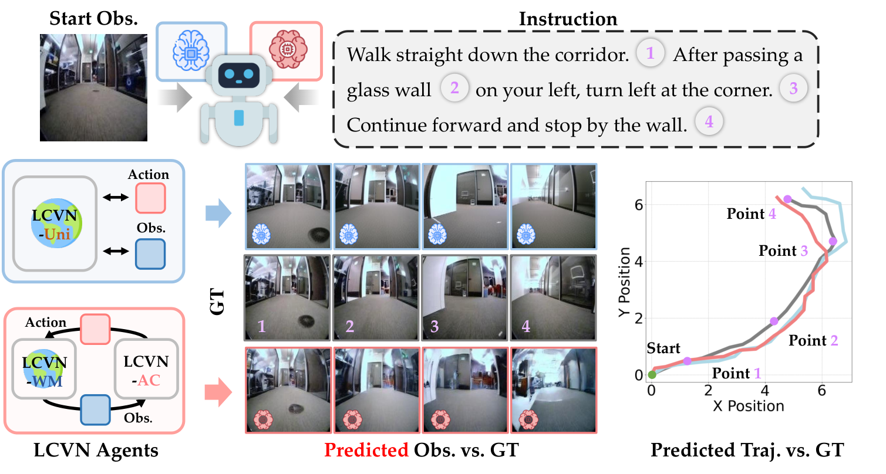
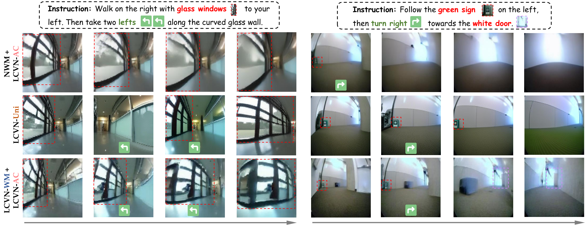
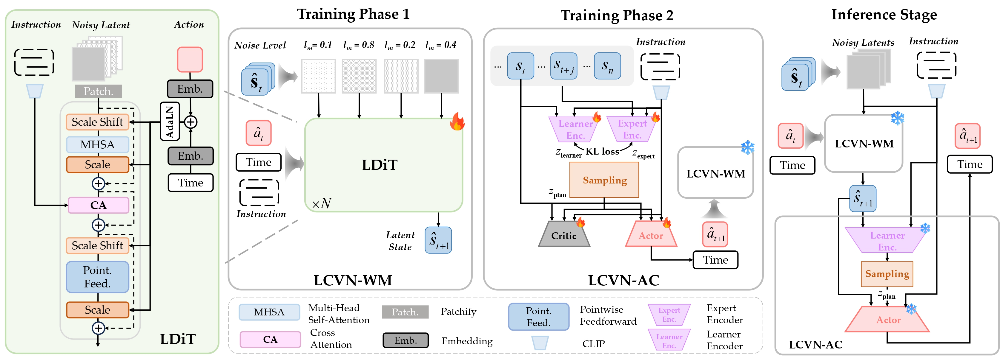

Figure 1. Language-conditioned visual navigation (LCVN). Given only an initial egocentric observation and a language instruction, the agent generates the entire future trajectory without environmental feedback, imagining intermediate states along the described route.
WorldNav invites participants to develop world-model-based or vision-language-action (VLA) agents for language-conditioned visual navigation. Given a single initial egocentric RGB observation and a natural-language instruction, the agent must generate the full future navigation trajectory without a goal image or intermediate environmental feedback.
The track encourages methods that couple imagination with control: world models that predict future observations to guide action selection, unified autoregressive models that interleave observation and action prediction, and VLA models that map vision and language to navigation actions. Policy-only methods are also welcome.
| Component | Description |
|---|---|
| Input | One initial egocentric RGB image and one natural-language instruction. |
| Output | A sequence of continuous navigation actions, each consisting of planar displacement and yaw rotation. |
| Termination | The agent ends the trajectory with a Stop command or null action. |
| Setting | Open-loop generation: no goal image or intermediate environmental feedback is available. |
Agents may generate the trajectory autoregressively, using their own predicted future observations or states to plan subsequent actions. The instruction remains the navigation goal throughout the rollout.

Figure 2. Qualitative comparison on the LCVN val_seen split. World-model agents exhibit stronger sensitivity to directional changes and are less prone to losing landmarks during world modeling.
| Place | Award |
|---|---|
| U0001F947 1st | $1,500 USD + Certificate |
| U0001F948 2nd | $800 USD + Certificate |
| U0001F949 3rd | $500 USD + Certificate |
Details of the Rising Star Award are available through the challenge website.
| Phase | Evaluation data | Leaderboard |
|---|---|---|
| Phase 1: Validation | Released val_seen and val_unseen splits | Ranked by the val_unseen Score; val_seen metrics are available in the submission scoring log. |
| Phase 2: Final Evaluation | Held-out test split | Ranked by the test Score. |
Phase 1 supports method development and validation; it does not determine shortlisting, final rankings, or awards. Final rankings and awards are determined entirely by the Phase 2 test Score. Scores from the two phases are not combined.
| Event | Date |
|---|---|
| Phase 1 opens | September 30, 2026, 16:00 UTC |
| Phase 1 deadline | October 31, 2026, 15:59 UTC |
| Phase 2 opens | November 2026 |
| Phase 2 deadline | November 20, 2026 |
| Awards announcement | December 2026 |
See the CodaBench competition page for the exact Phase 2 opening and closing times and schedule updates.
The track uses the LCVN dataset, comprising 39,016 trajectories and 117,048 human-verified instructions sourced from Go Stanford, ReCon, SCAND, HuRoN, and TartanDrive.
Each trajectory is paired with three instruction styles:
| Split | Trajectories | Instructions | Use |
|---|---|---|---|
| Train | 28,813 | 86,439 | Training |
| Validation Seen | 3,602 | 10,806 | In-domain validation |
| Validation Unseen | 1,500 | 4,500 | Unseen-domain validation |
| Test | 5,101 | 15,303 | Final evaluation |
| Total | 39,016 | 117,048 |
Go Stanford, ReCon, SCAND, and HuRoN provide the training and in-domain evaluation data. The unseen validation split is drawn exclusively from TartanDrive. The test split contains trajectories from both TartanDrive and in-domain sources.
The training and validation splits are available on Hugging Face. Phase 2 provides the test inference inputs: initial RGB observations and language instructions. Reference test trajectories and target annotations remain withheld for official evaluation.
From the track repository, run:
# Download and extract all released splits.
bash download_data.sh
# Alternatively, download only the Phase 1 validation splits.
SPLITS="val_seen val_unseen" bash download_data.sh
The released archives are train.tar (57.6 GB), val_seen.tar (7.4 GB), and val_unseen.tar (20.3 GB). After extraction, the expected directory structure is:
data/
└── lcvn/
├── train/
│ ├── {trajectory_id}/
│ │ ├── 0.jpg
│ │ ├── 1.jpg
│ │ ├── ...
│ │ ├── n.jpg
│ │ └── traj_data.pkl
│ └── ...
├── val_seen/
│ └── ...
└── val_unseen/
└── ...
Each {trajectory_id}/ folder contains a sequence of egocentric RGB frames and a traj_data.pkl file storing trajectory metadata such as navigation actions, pose-related information, and language instructions. The download script is available in the track repository.
Clone the LCVN implementation and follow the model-specific environment setup, data preparation, training, and inference instructions in the LCVN README:
git clone https://github.com/F1y1113/LCVN.git
cd LCVN
Download the starting kit from the relevant phase on CodaBench. Use its episode manifest and submission schema to export your model predictions, then package the files as described in the submission format below.
Two complementary LCVN approaches serve as the reference baselines:
| Baseline | Approach |
|---|---|
| LCVN-Uni | A unified autoregressive multimodal model fine-tuned from Anole-7B that jointly predicts the next action and next observation in a single forward pass. |
| LCVN-WM + LCVN-AC | A language-conditioned diffusion world model paired with an actor-critic agent trained entirely in the world model's latent space using intrinsic rollout rewards. |

Implementations and usage instructions are provided in the LCVN repository. See the LCVN paper for details.
Submissions are evaluated on navigation quality using Success Rate (SR), Absolute Trajectory Error (ATE), and Relative Pose Error (RPE).
| Metric | Direction | Description |
|---|---|---|
| SR | Higher is better | Fraction of trajectories whose final distance to the goal is smaller than the agent's average step size. |
| ATE | Lower is better | Global trajectory accuracy, measured by the Euclidean distance between aligned predicted and reference poses. |
| RPE | Lower is better | Local trajectory consistency, measured by discrepancies in relative motion between consecutive predicted and reference poses. |
The weights are 70% for SR, 20% for the ATE-based term, and 10% for the RPE-based term. SR is a fraction in [0, 1]. Both phases use this formula, calculated from full-precision metrics and displayed to six decimal places.
Ties are broken by higher SR, then lower ATE, then lower RPE, and finally earlier submission time, using the metrics for the phase's ranking split.
Submit predictions as one ZIP archive through CodaBench.
| Phase | Required files at the ZIP archive root |
|---|---|
| Phase 1 | val_seen.json and val_unseen.json |
| Phase 2 | test.json |
The example below illustrates the JSON structure with one episode and three motion commands. It is an abbreviated example; use the official starting kit for a complete submission.
{
"format_version": 1,
"split": "val_unseen",
"episodes": [
{
"episode_id": "20210826_40_0001_02_0",
"actions": [[0.25, 0.0, 0.0], [0.0, 0.0, 0.15], [0.12, -0.05, 0.0]]
}
]
}
| Field | Description |
|---|---|
format_version | Use the JSON number 1. |
split | val_seen, val_unseen, or test, matching the filename and submission phase. |
episodes | Predictions for all episodes in the corresponding official manifest. |
episode_id | The episode identifier from the manifest; each identifier must appear exactly once. |
actions | The ordered motion commands [dx, dy, dyaw]: planar displacement in metres and yaw rotation in radians, one command per environment step. Each episode must contain exactly the number of steps listed for it in the manifest; an agent that stops earlier appends null actions [0, 0, 0] for the remaining steps. |
Generate each trajectory from its initial RGB observation and natural-language instruction. The scored submission consists of prediction files; the starting kit on CodaBench provides the episode manifests, an example submission, and packaging instructions. See the competition's Submission & Evaluation page for the full file specification.
# Phase 1
zip -j submission.zip val_seen.json val_unseen.json
# Phase 2
zip -j submission_test.zip test.json
Place only the required JSON files at the archive root; do not include a parent directory or unrelated files. Upload the archive to the corresponding CodaBench phase, then check the scoring log for validation results and evaluation metrics.
Each participant may submit 5 times per day and 100 times in total per phase. The leaderboard retains the team's best-scoring submission.
1. Do I have to use a world model?
No. World-model agents, VLA models, and policy-only methods are all eligible. The track particularly encourages approaches that use predicted future states to guide planning.
2. Do I need to run a simulator or submit executable agent code?
No simulator or executable agent code is required for the scored submission. Upload the prediction files described in the submission format; the evaluation server scores the submitted trajectories.
3. Can the agent receive new observations during inference?
Only the initial RGB observation and the instruction are provided. The agent may generate and use its own predicted future observations, but it cannot access intermediate observations from the environment.
4. Are test annotations available?
No. Phase 2 provides the initial observations and instructions needed for inference. Reference test trajectories and target annotations remain withheld.
5. Which episodes must my submission include?
Include every episode in the official manifest exactly once. Phase 1 requires 10,806 val_seen episodes and 4,500 val_unseen episodes, covering the three instruction styles. Copy episode identifiers directly from the manifests.
6. What should I do if my submission is rejected?
Check the CodaBench scoring log. A SUBMISSION REJECTED: message identifies a submission issue, such as missing episodes, duplicate identifiers, or an incorrect archive layout. Correct the reported issue and resubmit. A SCORING DATA ERROR (organizer): message indicates an organizer-side problem; report it through GitHub Issues or email.
For technical questions, open an issue in this repository. For competition inquiries, contact roboworld2026@outlook.com.
| Resource | Link |
|---|---|
| Challenge website and registration | RoboWorld 2026 |
| Associated workshop | RoboPAD at NeurIPS 2026 |
| Starting kits, submissions, and leaderboard | CodaBench |
| Baseline implementation | LCVN repository |
| Dataset | LCVN on Hugging Face |
| Paper | Language-Conditioned World Modeling for Visual Navigation |
Refer to the LCVN repository, the dataset page, and the original source datasets for the applicable code and data licenses. Participation is governed by the Track 1 Terms and Conditions on CodaBench.
If you use the LCVN benchmark or the WorldNav track resources, please cite:
@misc{dong2026languageconditionedworldmodelingvisual,
title = {Language-Conditioned World Modeling for Visual Navigation},
author = {Yifei Dong and Fengyi Wu and Yilong Dai and Lingdong Kong and Guangyu Chen and Xu Zhu and Qiyu Hu and Tianyu Wang and Johnalbert Garnica and Feng Liu and Siyu Huang and Qi Dai and Zhi-Qi Cheng},
year = {2026},
eprint = {2603.26741},
archivePrefix = {arXiv},
primaryClass = {cs.CV},
url = {https://arxiv.org/abs/2603.26741}
}
@misc{roboworld2026track1,
title = {Track 1 | WorldNav: Language-Conditioned World Navigation},
author = {RoboWorld Challenge 2026 Organizers},
year = {2026},
howpublished = {https://roboworld2026.github.io/track1}
}
WorldNav is organized by the RoboWorld Challenge 2026 team as part of an independently organized challenge associated with the RoboPAD Workshop at NeurIPS 2026. We thank the LCVN authors and contributors, the DFoT, UniWM, and LUMOS teams, and CodaBench for the evaluation infrastructure.